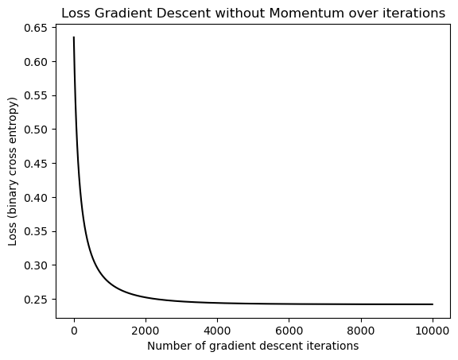

%load_ext autoreload
%autoreload 2
import torch
import numpy as np
from logistic import LogisticRegression, GradientDescentOptimizer
def classification_data(n_points = 300, noise = 0.2, p_dims = 2):
y = torch.arange(n_points) >= int(n_points/2)
y = 1.0*y
X = y[:, None] + torch.normal(0.0, noise, size = (n_points,p_dims))
X = torch.cat((X, torch.ones((X.shape[0], 1))), 1)
return X, y
X, y = classification_data(noise = 0.5)Abstract
Gradient Descent remains a modern way to minimize loss in a Machine Learning Algorithm. As a result, it is important to explore the different ways this can be improved. Through implementation of a Logistic Regression using Gradient Descent with momentum, I proved graphically how the efficacy of models with momentum superpassess that of those without. When using Gradient Descent, it is better to use momentum as it converges faster. I also show the issue of utilizing more dimensions than there are points. This leads to overfitting, and results in poor accuracy. When you have more dimensions than points, it is best to lower your dimensions by attempting to combine sparse dimensions or by removal. The source of my code lies here
Part A: Initialize packages and data
Part B: Experiments
Vanilla Gradient Descent
As in all of our following models, we are going to utilize Gradient Descent. This means that we are going to continously attempt to reach a local maximum in gradual steps. We will eventually converge to a value and our loss will start to plateau at a given value.
LR = LogisticRegression()
opt = GradientDescentOptimizer(LR)
vanilla_loss_vec = []
for _ in range(10000):
loss = LR.loss(X, y)
vanilla_loss_vec.append(loss)
opt.step(X, y, alpha = 0.04, beta = 0)We first perform our vanilla gradient descent, which means \(p_{dim} = 2\text{, }α = 0.03\text{, and }β = 0\) we can see from our line that it converges to the correct weight vector around 6000 iterations
from matplotlib import pyplot as plt
plt.plot(vanilla_loss_vec, color = "black")
plt.title("Loss Gradient Descent without Momentum over iterations")
labs = plt.gca().set(xlabel = "Number of gradient descent iterations", ylabel = "Loss (binary cross entropy)")
Using momentum
Something that gradient descent falls victim to, is thinking it discovered a global minimum, when in fact it has found a local minimum. The idea of momentum is that the our algorithm should converge at a faster rate than vanilla gradient descent. It also means that it should be able to overcome areas that appears to be global minima, by “speeding” through those areas with assisted momentum.
We then perform our gradient descent with momentum, which means \(p_{dim} = 2\text{, }α = 0.03\text{, and }β = 0.9\) we can see an extremely sharp drop off from our loss which converges to the correct weight vector around a few hundred iterations
LR = LogisticRegression()
opt = GradientDescentOptimizer(LR)
momentum_loss_vec = []
for _ in range(10000):
loss = LR.loss(X, y)
momentum_loss_vec.append(loss)
opt.step(X, y, alpha = 0.03, beta = .9)plt.plot(momentum_loss_vec, color = "black")
plt.title("Loss Gradient Descent with Momentum over iterations")
labs = plt.gca().set(xlabel = "Number of gradient descent iterations", ylabel = "Loss (binary cross entropy)")
Overfitting
The curse of all scientists trying to make predictions with models is the potential to overfit. If we have more dimensions than we have points, then the data is highly sparse, meaning that there are many dimensions with little or no points. With higher dimensionality, the model will more likely to fit to noise. Thus, we are going to simulate how this can happen with more dimensions than points.
Creating our data
In order to model what happens when we have more dimensions than we have points, let’s call our classification_data function twice so that we can save training data and test dating. That way, we can see what overfitting on our training data causes our predictions to look like on our test data.
We give them the same parameters \[\text{n\_points = 50, noise = 0.5, p\_dims = 100}\]
X_train, y_train = classification_data(n_points = 50, noise = 0.5, p_dims = 100)
X_test, y_test = classification_data(n_points = 50, noise = 0.5, p_dims = 100)from sklearn.metrics import accuracy_score
LR = LogisticRegression()
opt = GradientDescentOptimizer(LR)
overfit_loss_vec = []
for _ in range(10000):
loss = LR.loss(X_train, y_train)
overfit_loss_vec.append(loss)
opt.step(X_train, y_train, alpha = 0.001, beta = .8)
y_pred_train = LR.predict(X_train)
y_pred_test = LR.predict(X_test)
train_prediction = accuracy_score(y_train, y_pred_train)
test_prediction = accuracy_score(y_test, y_pred_test)
print("Training Accuracy: %5.2f Test Accuracy: %5.2f" % (train_prediction, test_prediction))Training Accuracy: 1.00 Test Accuracy: 0.76Our final accuracy is \(76\%\) for our test data, even though our training data has a final accuracy of \(100\%\)!
Discussion
We have gone quite a few places, so its important to sum up what we have done as well as what we have discovered. We implemented Logistic Regression with Gradient Descent with Momentum. Using our Logistic Regression, we conducted three experiments. The first experiment was our Vanilla Gradient Descent. This meant we didn’t utilize momentum, and it resulted in a convergence at around 6000 iterations. Using the same parameters, we conducted our second experiment Gradient Descent with Momentum. By using momentum, we were able to converge at a faster rate. This was expected as momentum helps our Gradient Descent more quickly reach a local minimum.